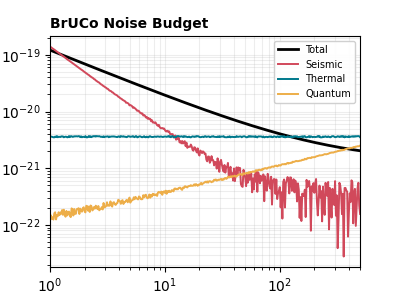
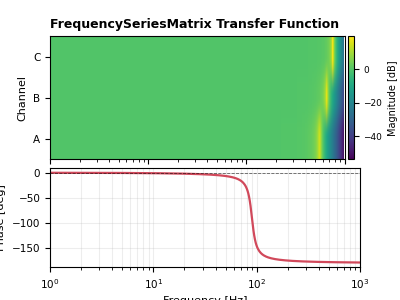

ケーススタディ（目的別） / Case Studies
Note
ページ種別: ガイド索引
複数の GWexpy 機能を解析目的に沿って組み合わせる、目的別の実践デモ集です。 クラスや機能ごとの使い方を順番に学びたい場合は、 チュートリアル（機能別） を参照してください。
対象読者: 基本操作を理解したうえで、実務に近い一連の解析例を探したい利用者。 前提知識: チュートリアル（機能別） や はじめに (Getting Started) にある主要クラスの基本を理解していること。 このページの用途: GWexpy の目的別ケーススタディをテーマ別に探すためのメインの一覧として使うこと。 検索のヒント: ケーススタディ, ギャラリー, 実践ワークフロー, キャリブレーション, 相互運用, ノイズハンティング, ML
Note
Case Studies は解析目的ごとの実演、Tutorials は機能やクラスごとの学習例です。 このページを case_* ノートブックのメインの一覧として扱います。
Note
このページの見方: I はキャリブレーションと制御、II は外部連携と再現性、III は統計・機械学習、IV はノイズハンティングと検出器診断を扱います。
Note
例の読み方: 目的: 自分の課題に近いワークフローを選ぶこと。 入力: 関連する GWexpy オブジェクトの基本知識と notebook 実行環境。 出力: 読むべき、またはローカルで実行すべきケーススタディ notebook の候補。
注目ギャラリー
Note
この注目カードは、ホームページの teaser で使っている 3 枚のサムネイルと同じ画像を再利用しています。 ただしメインのはこのページです。ホームページは短い導入であり、以下のカテゴリ別一覧が正式なギャラリーです。
Note
最小限のビジュアル索引:
ノイズバジェット のサムネイル -> IV. ノイズハンティングと検出器診断 から探し始める
伝達関数推定 のサムネイル -> I. キャリブレーション・応答・制御 から探し始める
アクティブダンピング のサムネイル -> I. キャリブレーション・応答・制御 から探し始める

検出器雑音の主要な結合経路を切り分け、どこから対策すべきかを比較します。

コヒーレンス評価、応答のフィッティング、実測伝達経路の解釈をひとつの流れで確認します。

6 自由度防振系に対する MIMO 制御ワークフローを具体例でたどれます。
I. キャリブレーション・応答・制御
II. 外部連携・I/O・再現性
III. 統計・機械学習ワークフロー
IV. ノイズハンティングと検出器診断
Note
各 API の詳細（引数・戻り値・クラス一覧）は リファレンス (Reference) を参照してください。
See also
次に読むページ:
チュートリアル（機能別） でクラス別・機能別の基礎を固める
リファレンス (Reference) でケーススタディ内の API 詳細を確認する
ファイル I/O 対応フォーマットガイド で対応フォーマットと読み書き経路を調べる